Welcome to dev-shell v1.0 — an interactive tour of my work.
Type help and hit Enter to begin. Try ls, open ble, or whoami.
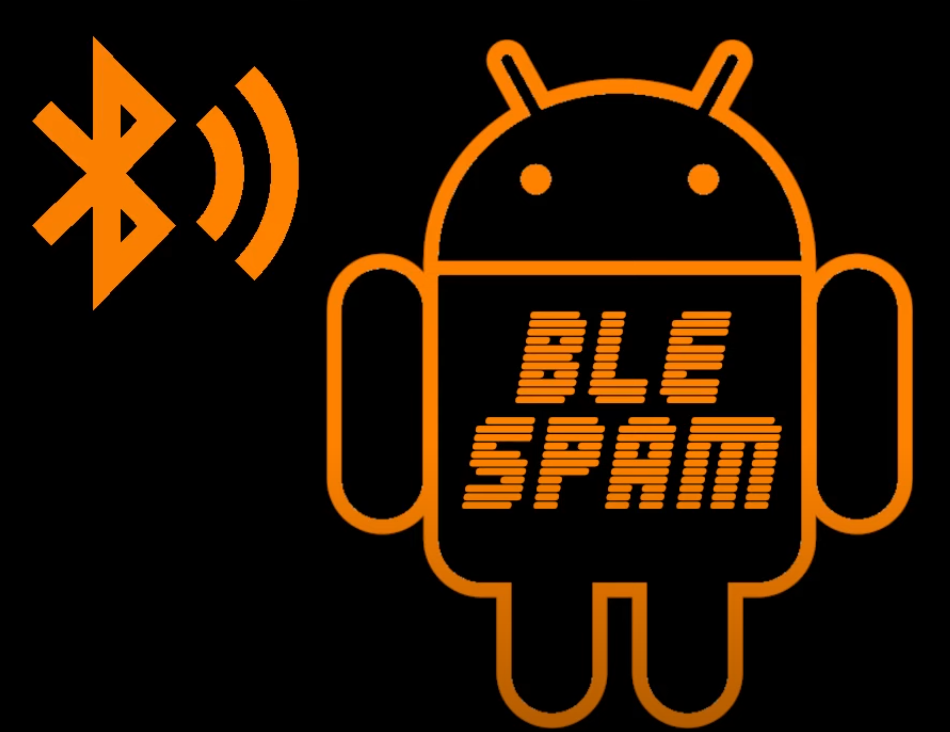
Developed a BLE spamming tool using the HM-10 module with real-time message updates displayed on an SH1106 I2C OLED.
View Project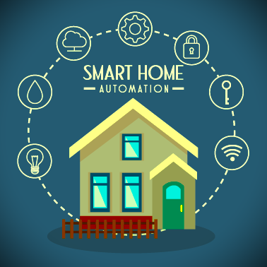
Created a smart home project designed for people with disabilities using an ESP8266, relay, and LED bulb, featuring control via Blynk IoT.
View Project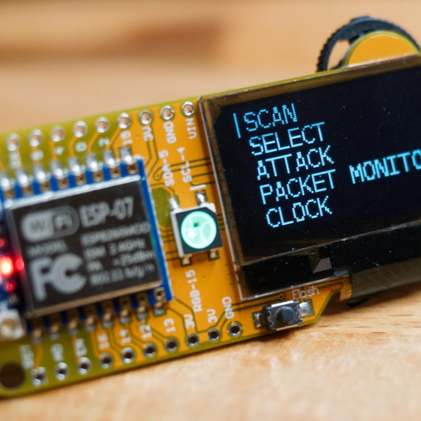
Reconstructed a WiFi Deauther and Evil Twin project using the ESP8266 with a custom OLED display sequence.
View Project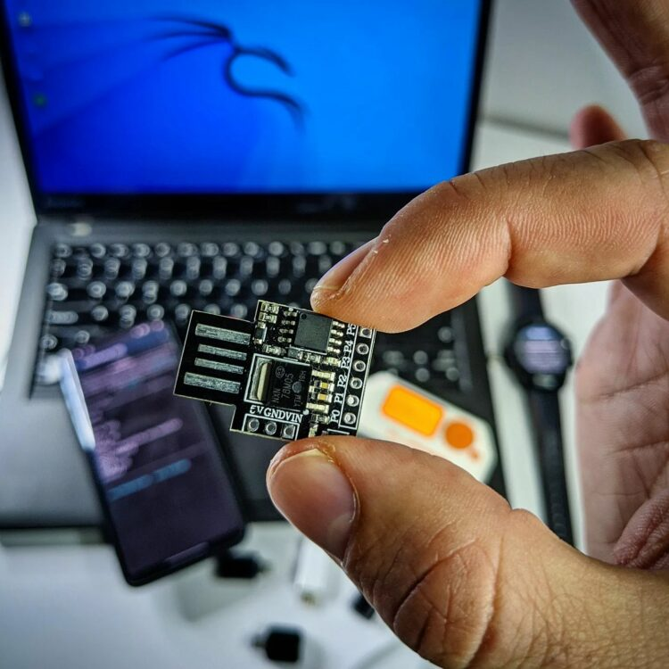
Created an automatic Bluetooth HID attack interface using Arduino.
View ProjectDeveloped a CLI-based project integrating Git and SQL for user authentication, authorization, and commit management.
View Project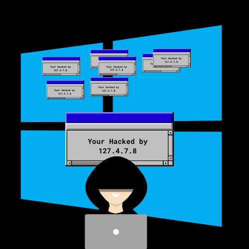
Tool that converts plain text into BAT scripts for web pentesters, improving automation.
View Project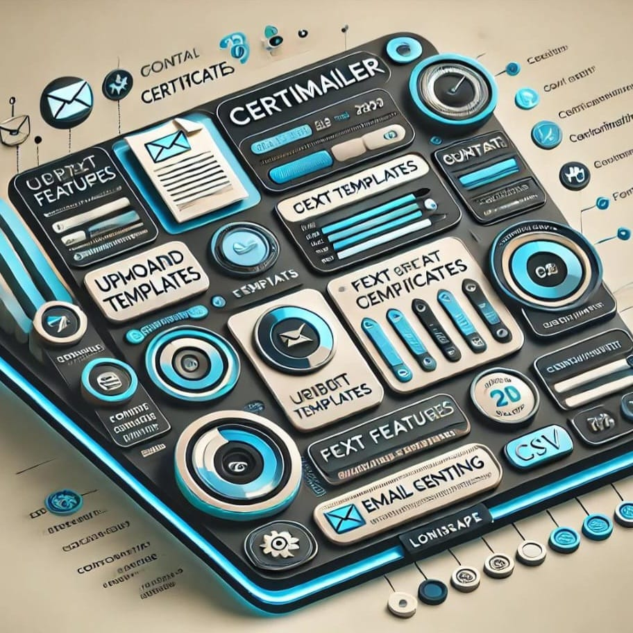
An automated email tool for sending certificates using Python modules like yagmail.
View Project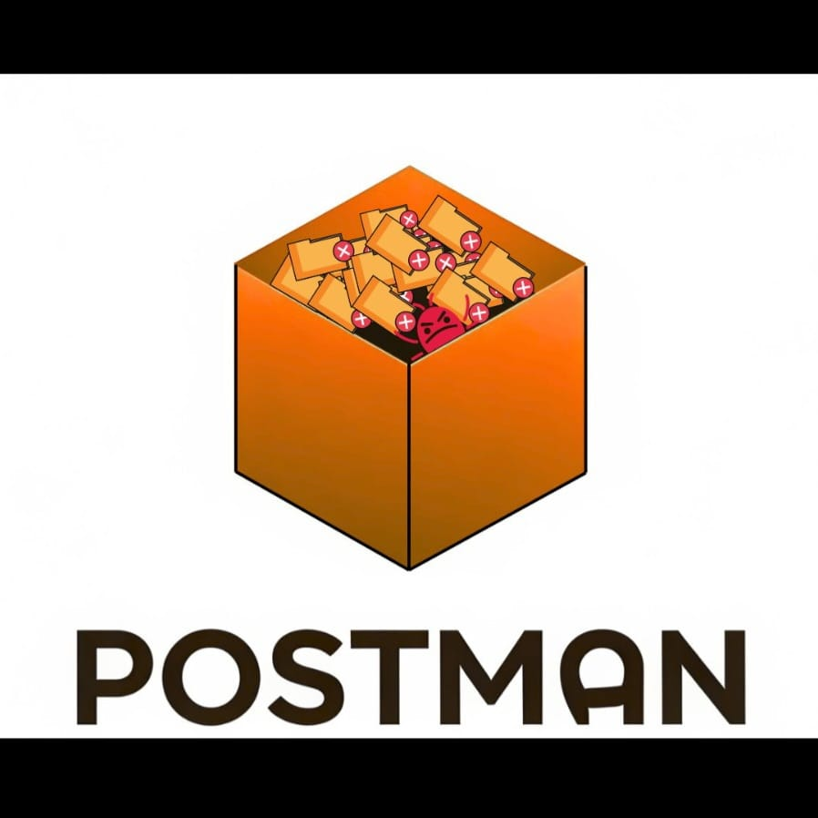
Fully customizable CLI tool for HTTP requests, focusing on interactivity and flexibility.
View ProjectAI-powered chatbot for fetching Google search results, cloning websites, and Google Dorking.
View Project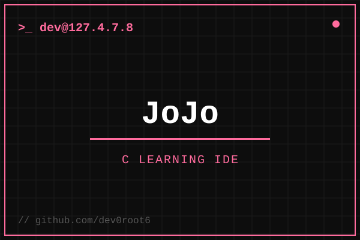
A browser-based C learning IDE for absolute beginners, built for our college — a live C editor with Judge0 run output, an AI "Sensei" tutor, and a code-to-diagram panel powered by Mermaid.
View Project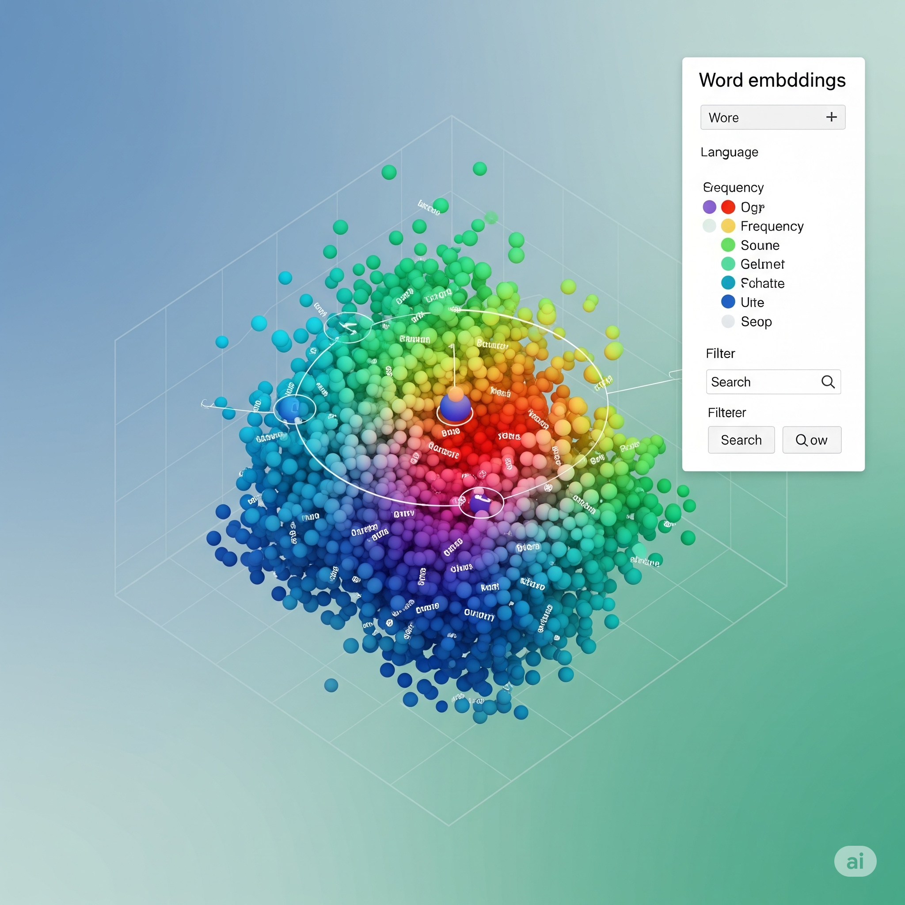
A collection of hands-on Generative AI and Machine Learning lab programs — word embeddings, Word2Vec, HuggingFace pipelines and clustering — with Python scripts and Jupyter notebooks on real datasets.
View Project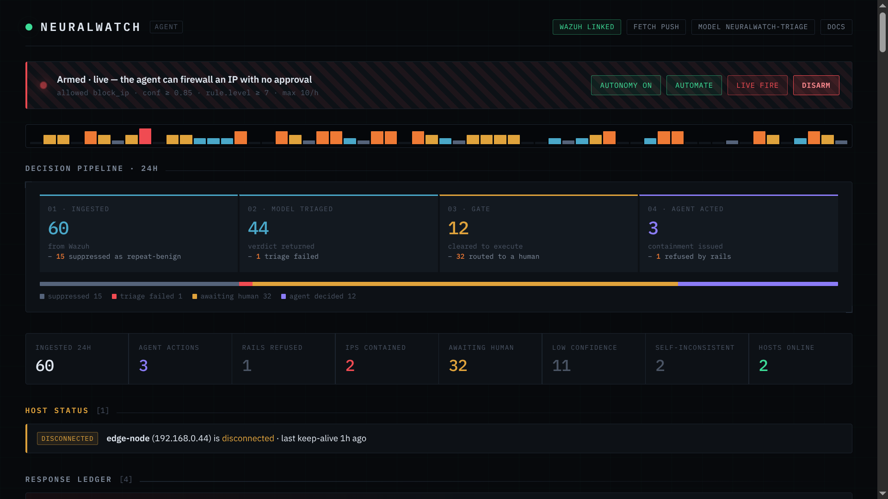
An AI SOC agent that sits between Wazuh and a local LLM — it triages security alerts, decides on containment, and can auto-execute blocks with a human-in-the-loop safety rail.
View ProjectEnd-to-end encrypted, real-time messaging application built on the MERN stack with Socket.IO.
View ProjectAn AI-powered IT asset and stock management system for college IT departments — tracking fixed assets and consumables with lifecycle history and low-stock alerts.
View Project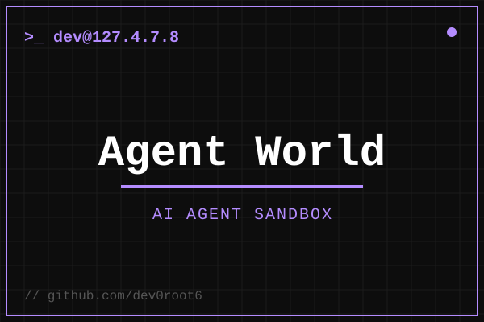
An autonomous AI-agent sandbox where deployed agents live, work, talk and compete for points — powered by OpenRouter LLMs with persistent memory on NeonDB and Cloudflare Workers.
View Project
A next-generation IDE built to help developers learn and visualize code as they write it.
View Project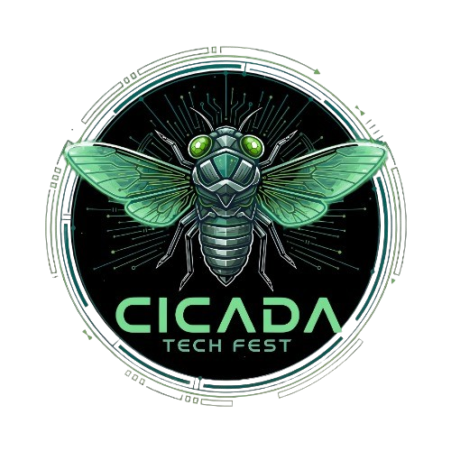
The official website for CICADA, Atria Institute of Technology's annual tech fest — a Next.js app showcasing events, workshops, hackathons and competitions.
View Project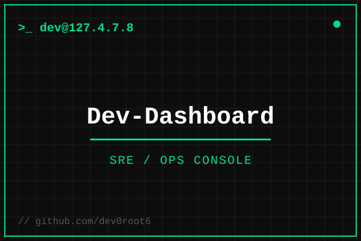
A centralized SRE/ops dashboard that consolidates system health metrics, logs and developer tools into a single real-time view.
View Project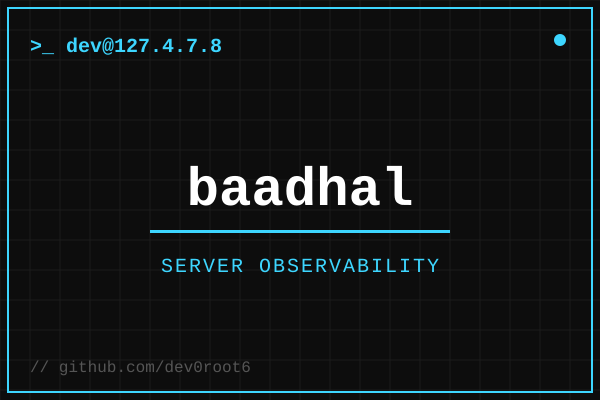
A self-contained observability agent for Ubuntu servers — disk-usage tracking, kernel and Docker container health, with webhook-based alerting (written in Go).
View Project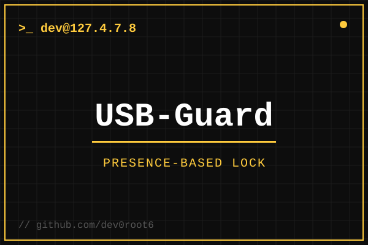
A lightweight Linux utility that locks the desktop based on the physical presence of a specific USB device.
View Project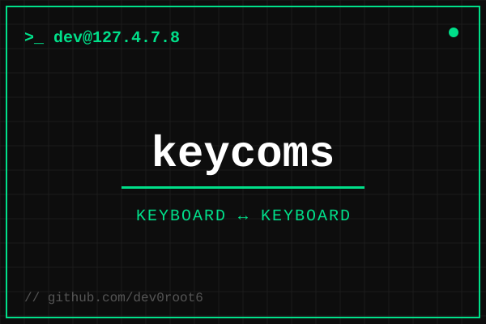
Keyboard-to-keyboard real-time communication over WebSockets — a streamer's keystrokes are broadcast and injected into listeners' active windows, with admin-controlled roles.
View Project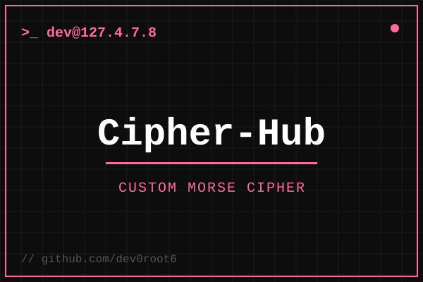
A Flask web app to build and use a custom Morse-style cipher, storing user-defined letter and symbol mappings to encode and decode messages.
View ProjectA collaborative project tackling metro authentication problems with a smarter access-gate system.
View ProjectA Telegram phishing-awareness tool built for security education and red-team demonstrations.
View Project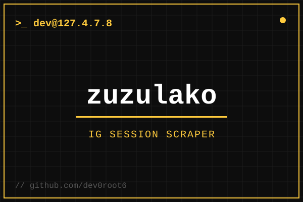
An Instagram session scraper for security research and account-session analysis.
View Project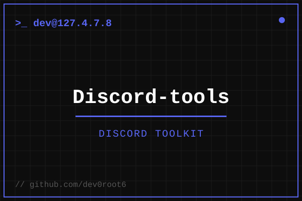
A collection of shell-based utilities and bots powering the dev0root.in Discord server.
View Project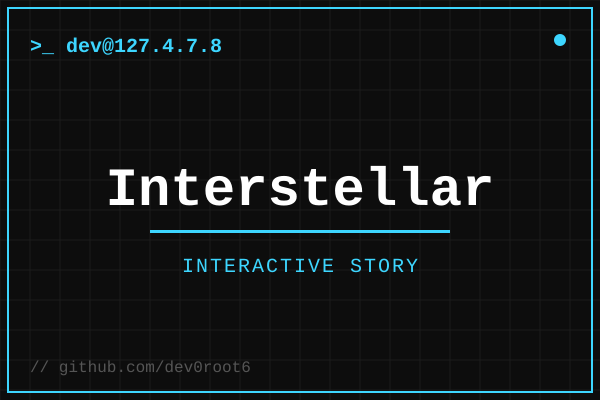
An interactive, chapter-based Interstellar web experience with ambient audio — docking, slingshot and tesseract scenes rendered in the browser.
View Project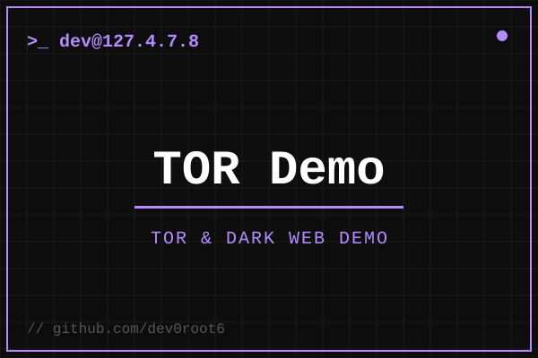
An educational live-demo suite explaining Tor and the dark web — traffic workflow, hacker-trace visualization and safe-browsing concepts.
View Project